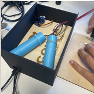

Prototype — vue d'ensemble Gadget en situation
Gadget en situation
Contexte & objectif
Ce workshop s'inscrit dans un cadre pédagogique visant à sortir des sentiers battus : livrer un projet complet, narratif et démontrable. Le thème James Bond imposait une contrainte forte — la discrétion — et un univers reconnu, ce qui a facilité l'idéation tout en gardant un objectif technique clair.
L'objectif principal : imaginer un gadget crédible (surveillance, communication, sécurité), définir son scénario d'utilisation sur le terrain, puis en réaliser un prototype fonctionnel à base de microcontrôleur, capteurs et éventuellement liaison sans fil.
Penser usage avant technologie : à qui sert l'objet, dans quelle situation, et pourquoi un agent l'utiliserait — puis faire en sorte que le prototype le prouve.
Problématique
Comment concevoir un objet numérique qui soit à la fois discret, crédible dans un scénario type mission, et réalisable en quelques jours avec des moyens limités ? La difficulté tenait à l'équilibre entre ambition du concept et faisabilité technique.
Processus de réalisation
- Cadrage & idée — Brainstorming sur les familles de gadgets. Choix d'un concept illustrable par un prototype simple mais convaincant.
- Scénario d'usage — Rédaction d'un mini-scénario : qui est l'agent, quelle mission, à quel moment le gadget intervient.
- Spécifications techniques — Liste des fonctions à démontrer, choix des composants et plan de câblage.
- Prototypage — Assemblage, câblage et programmation du microcontrôleur pour un comportement cohérent avec le scénario.
- Mise en forme & discrétion — Réflexion sur l'enveloppe pour que l'objet paraisse crédible et discret.
- Préparation de la démo — Répétition du pitch pour rendre le projet compréhensible et impactant en peu de temps.
Ce qui a été livré
Un prototype physique démontrant les fonctions principales du gadget, une présentation orale avec scénario et démo live. L'accent était mis sur la clarté du storytelling et la preuve de faisabilité par l'objet lui-même.
Démarche en trois axes
Recherche de concepts réalisables en peu de temps : surveillance, communication sécurisée, accès, alerte… Choix d'une idée permettant une bonne histoire et un prototype démontrable.
Microcontrôleur (Arduino ou équivalent), capteurs, LEDs, modules radio ou NFC. Programmation pour lier entrées (capteur, bouton) aux sorties (feedback visuel, sonore, transmission).
Rédaction du scénario de mission, définition du moment d'usage et préparation d'une démo courte. Objectif : que le jury comprenne immédiatement l'utilité de l'objet.
Défis & apprentissages
Rester dans le temps imparti tout en gardant un rendu propre, et faire en sorte que le prototype « parle » sans explications longues. Côté technique, la gestion du câblage et des I/O a demandé de bien séquencer les étapes.
Ce workshop a renforcé la capacité à lier récit et technique : une bonne idée sans démo reste un concept ; un prototype sans contexte reste une démo technique. La contrainte de discrétion a aussi imposé des choix simples et efficaces.
Compétences mobilisées
Technologies & outils
Microcontrôleur (Arduino ou compatible), breadboard, capteurs (mouvement, proximité…), LEDs, buzzer, câblage. IDE Arduino pour le flash et le debug. Optionnel : modules radio, NFC ou Bluetooth.
Bilan personnel
Ce projet m'a rappelé que les meilleures idées techniques gagnent à être racontées : un gadget « cool » sans scénario reste une démo ; avec un contexte de mission et une contrainte de discrétion, il devient un vrai concept produit. J'en retiens aussi l'importance de découper le travail en étapes courtes et testables, et de soigner la démo finale.